회귀진단 실습
회귀진단
모형: \(y=\beta_0 + \beta_1x_1 + \beta_2x_2 + \epsilon, \epsilon\sim N(0,\sigma^2) \text{ indep }\)
유의성검정
- 모형: \(H_0: \beta_1 = \beta_2 = 0 \quad (F)\)
- 회귀계수: \(H_0:\beta_1=0, H_0:\beta_2=0 \quad (t)\)
적합도: \(R^2, R^2_{Adj}, \sqrt{MSE} = RMSE\) : 비교
회귀진단
- 잔차분석 (모형에 대한 가정 검토) – \(e_i = y_i -\hat{y}_i\)
- 적절한 모형의 선택 – 변수변환,\(\log, x^2, \dots,\) 변수선택
- 독립변수들간의 상관관계 검토 – 다중공선성 (multi-co-linearity)
- 지렛대점(leverage point)의 검출
- 이상치(outlier) 확인
- 영향점(influential observation)의 검출
오차항의 가정검토 (잔차분석)
잔차라고 하는 것은 여러가지 의미를 갖는다. 잔차라고 하는 것은 우리가 설정한 모형에서 오차항에 대한 가정을 보는 것인데 오차는 실제 관측할 수 없는 값을 의미하기 때문에 오차 대신에 잔차를 이용해서 잔차가 마치 오차인 것 처럼 가정 검토를 하는 것이다.
잔차는 \(\text{실제값}-\text{예측값}\)인데 이 잔차를 (\(e_i = y_i-\hat{y}_i\)) 오차항에 대략적으로 대한 추정값(\(\hat{\epsilon}_i\))이라고 생각할 수 있다.
따라서 \(\epsilon\sim N(0,\sigma^2) \text{ indep }\) 라고 했으니 이를 검토하기 위해 잔차(\(e_1, e_2,\dots e_n)\)을 사용하는 것
가변수
Example
dt <- data.frame(
y = c(17,26,21,30,22,1,12,19,4,16,
28,15,11,38,31,21,20,13,30,14),
x1 = c(151,92,175,31,104,277,210,120,290,238,
164,272,295,68,85,224,166,305,124,246),
x2 = rep(c('M','F'), each=10)
)
head(dt)| y | x1 | x2 | |
|---|---|---|---|
| <dbl> | <dbl> | <chr> | |
| 1 | 17 | 151 | M |
| 2 | 26 | 92 | M |
| 3 | 21 | 175 | M |
| 4 | 30 | 31 | M |
| 5 | 22 | 104 | M |
| 6 | 1 | 277 | M |
생각
ggplot(dt, aes(x1, y, col=x2)) +
geom_point(size=4) +
# geom_text(label=rownames(dt)) +
theme_bw() +
guides(col=guide_legend(title='성별')) +
scale_color_manual(labels=c('여자','남자'),
values = c('darkorange', 'steelblue'))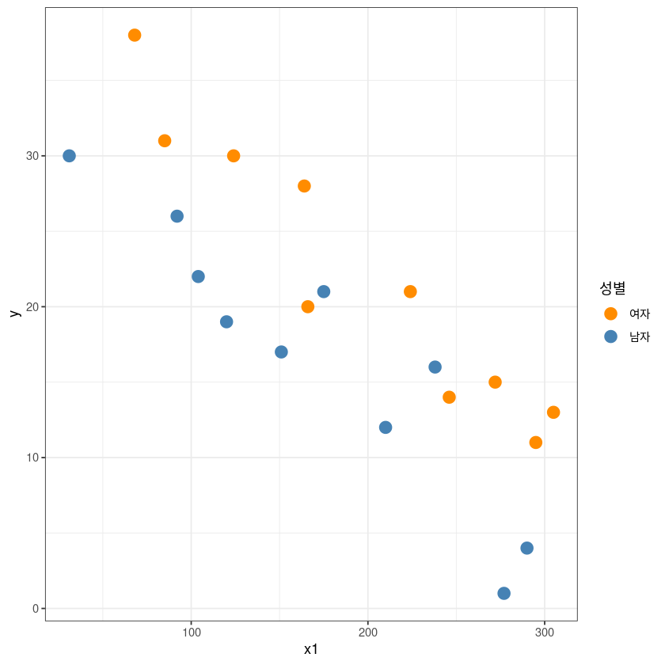
- 교호작용 없이 가변수를 모델에 넣어줘야겠다고 생각해볼 수 있다.
Model1 : \(y=\beta_0 + \beta_1x_1 + \epsilon\)
범주형 변수(\(x_2)\) 즉, 성별구분 없이 모형적합.
Call:
lm(formula = y ~ x1, data = dt)
Residuals:
Min 1Q Median 3Q Max
-9.579 -4.737 0.721 4.224 7.936
Coefficients:
Estimate Std. Error t value Pr(>|t|)
(Intercept) 36.40361 2.78580 13.068 1.26e-10 ***
x1 -0.09323 0.01396 -6.677 2.91e-06 ***
---
Signif. codes: 0 ‘***’ 0.001 ‘**’ 0.01 ‘*’ 0.05 ‘.’ 0.1 ‘ ’ 1
Residual standard error: 5.124 on 18 degrees of freedom
Multiple R-squared: 0.7124, Adjusted R-squared: 0.6964
F-statistic: 44.58 on 1 and 18 DF, p-value: 2.906e-06- 모형자체는 상당히 유의하고, \(MSE, R^2\) 확인
ggplot(dt, aes(x1, y)) +
geom_point(size=4) +
geom_abline(slope = coef(model_1)[2],
intercept = coef(model_1)[1], col= 'red')+
theme_bw()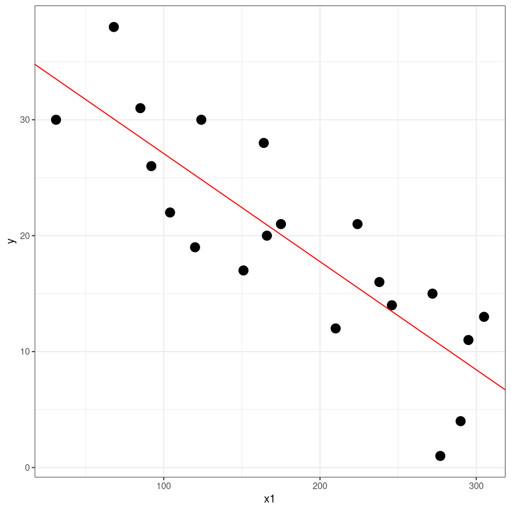
\(\hat{y} = 36.40-0.0932x_1\)
- 평균적으로 \(x=0\)이라면 \(36.40\) 시간이 걸린다.
- 시험성적이 1점 올라갈때마다 \(0.09\) 시간정도 감소한다.
Model2: \(y=\beta_0 + \beta_1x_1 + \beta_2x_2 + \epsilon\)
\(\begin{cases} x_2=0 & \text{if F} \text{ (BASE)}\\ x_2 = 1 & \text{if M} \end{cases}\)
\(E(y|F): \beta_0 + \beta_1x_1\)
\(E(y|M): \beta_0 + \beta_1x_2 + \beta_2 = (\beta_0 + \beta_2) + \beta_1x_1\)
\(\begin{align*}\Rightarrow\beta_2 &= E(y|M) - E(y|F) \\ &= \beta_0 + \beta_2 + \beta_1x_1 - \{ \beta_0 + \beta_1x_1\} \\ &= \text{시험(적성검사)성적이 동일할 때 여자와 남자의 소요시간 평균의 차이}\end{align*}\)
contrast: factor로 인식이 됐을 때 뭐가 0이고 뭐가 1인지 알려줌- 교재와는 달리 \(F\)가 \(0\), \(M\)이 \(1\)임을 주의하자.
- 해당 경우 \(0\)이 베이스이므로 여자가 베이스!!
- 실제모형적합시 \(x_2\) 그대로 넣어주면 된다. 자연스럽게 팩터형 변수로 바뀜.
Call:
lm(formula = y ~ x1 + x2, data = dt)
Residuals:
Min 1Q Median 3Q Max
-5.0165 -1.7450 -0.6055 1.8803 6.1835
Coefficients:
Estimate Std. Error t value Pr(>|t|)
(Intercept) 41.768865 1.948930 21.432 9.64e-14 ***
x1 -0.100918 0.008621 -11.707 1.47e-09 ***
x2M -7.933953 1.414702 -5.608 3.13e-05 ***
---
Signif. codes: 0 ‘***’ 0.001 ‘**’ 0.01 ‘*’ 0.05 ‘.’ 0.1 ‘ ’ 1
Residual standard error: 3.123 on 17 degrees of freedom
Multiple R-squared: 0.8991, Adjusted R-squared: 0.8872
F-statistic: 75.72 on 2 and 17 DF, p-value: 3.42e-09- 가설 : \(\beta_1=\beta_2 = 0\) \(\to \text{p-value}=3.42e-09\)로 유의
- \(R^2, R^2_{Adj}\) 이전 모델1에 비해 매우 증가 (\(0.2\) 정도 증가)
- \(RMSE\) 도 매우 감소
x2M: 남자그룹의 회귀계수가 \(-7.933953\)을 의미한다. (즉, \(F=0, M=1\))- \(\hat{\beta}_2=-0.7933953\) (base가 바뀌었으므로 교재와 부호가 다른것은 당연)
- 적성검사 성적이 동일하다면 여자(base)보다 남자가 습득하는데 걸리는 시간이 \(7.93\) 시간만큼 적게 걸린다.
\(\to\) \(x_2\)라는 변수가 들어가면서 적합력이 매우 좋아짐을 알 수 있고 개별회귀계수에 대해서도 매우 유의함을 알 수 있다.
ggplot(dt, aes(x1, y, col=x2)) +
geom_point(size=4) +
theme_bw() +
## Female
geom_abline(slope = coef(model_2)[2], # beta1
intercept = coef(model_2)[1], col= 'darkorange')+ ## beta0
## Male
geom_abline(slope = coef(model_2)[2], # beta1
intercept = coef(model_2)[1]+coef(model_2)[3], col= 'steelblue')+ ## beta0 + beta3
guides(col=guide_legend(title="성별")) +
scale_color_manual(labels = c("여자", "남자"), values = c("darkorange", "steelblue"))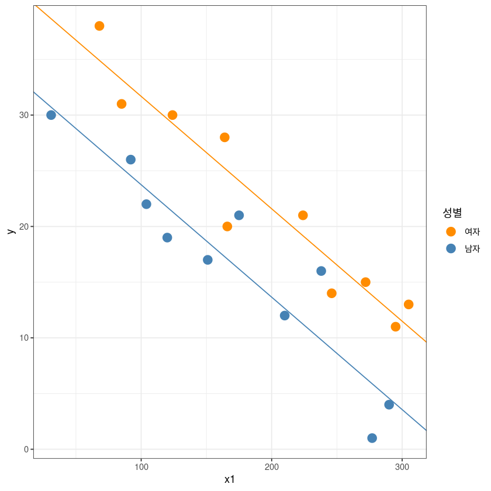
적성검사 성적이 동일할 때 남성과 여성의 평균시간차이가 있는가? (양측)
\(H_0: \beta_2=0 \text{ vs. } H_1: \beta_2 \neq 0\)
| Estimate | Std. Error | t value | Pr(>|t|) | |
|---|---|---|---|---|
| (Intercept) | 41.7688646 | 1.948929636 | 21.431694 | 9.640000e-14 |
| x1 | -0.1009177 | 0.008620641 | -11.706522 | 1.468240e-09 |
| x2M | -7.9339526 | 1.414702366 | -5.608213 | 3.134533e-05 |
x2M의 p-value(양측검정에 대한 유의확률 값)가 아주 작기때문에 \(\beta_2\)가 유의하다고 할 수 있다.\(\text{Std.Error} = \widehat{\text{s.e}}(\hat{\beta}_2)\)
\(t=\frac{\hat{\beta}_2}{\widehat{\text{s.e}}(\hat{\beta}_2)}\)
적성검사 성적이 동일할 때 남성이 여성보다 평균적으로 시간이 더 적게 걸릴까? (단측)
\(H_0: \beta_2=0 \text{ vs. } H_1: \beta_2 < 0\)
단측검정에 대한 유의확률값은 양측검정읠 p-value의 값을 2로 나눠준 값이다.
따라서 남성이 여성보다 평균시간이 더 적게 걸린다.
Partial F-test (RM vs. FM)
RM: model_1
FM: model_2
| Res.Df | RSS | Df | Sum of Sq | F | Pr(>F) | |
|---|---|---|---|---|---|---|
| <dbl> | <dbl> | <dbl> | <dbl> | <dbl> | <dbl> | |
| 1 | 18 | 472.5913 | NA | NA | NA | NA |
| 2 | 17 | 165.8145 | 1 | 306.7768 | 31.45206 | 3.134533e-05 |
- \(RSS\) : \(SSE\)라고 생각
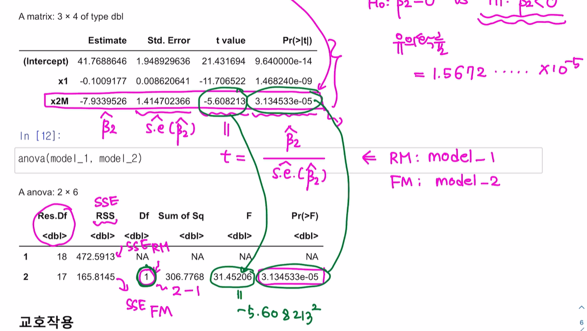
- 자유도가 \(1\)일 때 t분포의 유의확률과 \(F\)분포의 유의확률은 동일, t통계량을 제곱하면 F통계량이 된다.
교호작용
\(y=\beta_0 + \beta_1x_1 + \beta_2x_2 + \beta_3x_1x_2 + \epsilon\)
\(\begin{cases} x_2=0 & \text{if F} \text{ (BASE)}\\ x_2 = 1 & \text{if M} \end{cases}\)
\(E(y|F): \beta_0 + \beta_1x_1 \\ E(y|M): \beta_0 + \beta_1x_2 + \beta_2 = (\beta_0 + \beta_2) + (\beta_1+\beta_3)x_1\)
Call:
lm(formula = y ~ x1 * x2, data = dt)
Residuals:
Min 1Q Median 3Q Max
-5.0463 -1.7591 -0.6232 1.9311 6.1102
Coefficients:
Estimate Std. Error t value Pr(>|t|)
(Intercept) 41.969620 2.635580 15.924 3.11e-11 ***
x1 -0.101948 0.012474 -8.173 4.20e-07 ***
x2M -8.313516 3.541379 -2.348 0.0321 *
x1:x2M 0.002089 0.017766 0.118 0.9078
---
Signif. codes: 0 ‘***’ 0.001 ‘**’ 0.01 ‘*’ 0.05 ‘.’ 0.1 ‘ ’ 1
Residual standard error: 3.218 on 16 degrees of freedom
Multiple R-squared: 0.8992, Adjusted R-squared: 0.8803
F-statistic: 47.56 on 3 and 16 DF, p-value: 3.405e-08- 모형 자체 유의
- \(\beta_3\) 즉, 교호작용 텀을 추가하였지만 \(R^2_{Adj}\)는 오히려 감소 (\(R^2_{Adj}: 0.8872(\beta_1, \beta_2)\to 0.8803(\beta_1,\beta_2, \beta_3)\))
- \(RMSE\) 역시 약간 증가. (\(3.123 \to 3.218\))
- \(\beta_3\)를 넣었어도 모형이 좋아지지 않네? \(\to\) 실제로 \(\beta_3\)의 회귀계수가 유의하지 않다고 나왔다. (통계적으로 유의하지 X)
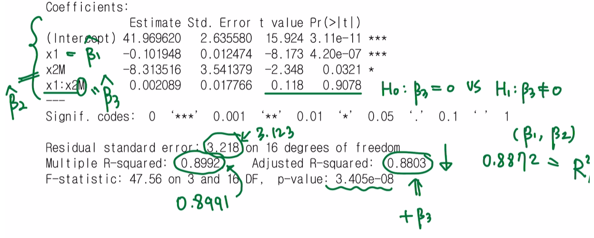
## y = b0 + b1x1 + b2x2 + b3x1x2
## M : x2=0 => E(y|M) = b0+b1x1
## F : x2=1 => E(y|F) = b0 + b1x1 + b2 + b3x1
## = (b0+b2) + (b1+b3)x1
ggplot(dt, aes(x1, y, col=x2)) +
geom_point(size=4) +
theme_bw() +
geom_abline(slope = coef(model_3)[2],
intercept = coef(model_3)[1], col= 'darkorange')+
geom_abline(slope = coef(model_3)[2]+coef(model_3)[4],
intercept = coef(model_3)[1]+coef(model_3)[3], col= 'steelblue')+
guides(col=guide_legend(title="성별")) +
scale_color_manual(labels = c("여자", "남자"), values = c("darkorange", "steelblue"))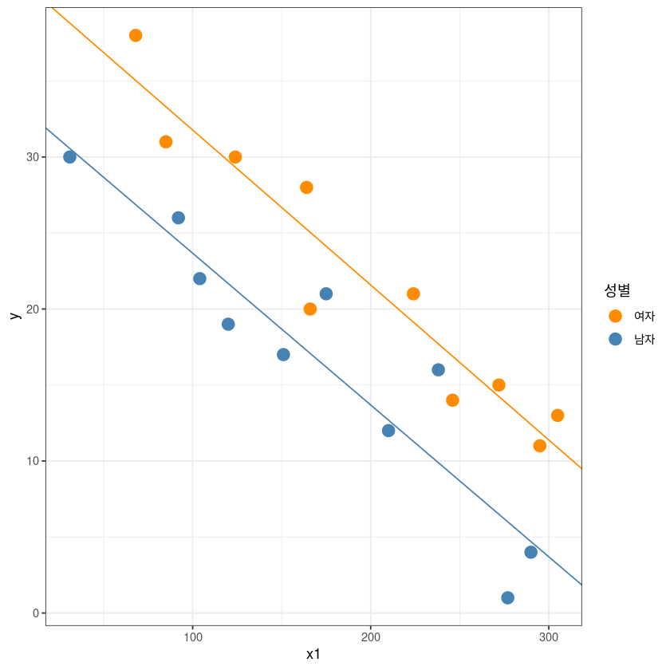
가설검정1
\(H_0: \beta_3=0 \text{ vs. } H_1: \beta_3 \neq 0\)
| Estimate | Std. Error | t value | Pr(>|t|) | |
|---|---|---|---|---|
| (Intercept) | 41.96961960 | 2.63558045 | 15.9242415 | 3.106803e-11 |
| x1 | -0.10194777 | 0.01247420 | -8.1726893 | 4.198832e-07 |
| x2M | -8.31351564 | 3.54137909 | -2.3475362 | 3.209176e-02 |
| x1:x2M | 0.00208933 | 0.01776597 | 0.1176029 | 9.078460e-01 |
- Partial F-test
\(H_0: \beta_3=0 \text{ vs. } H_1: \beta_3 \neq 0\)
| Res.Df | RSS | Df | Sum of Sq | F | Pr(>F) | |
|---|---|---|---|---|---|---|
| <dbl> | <dbl> | <dbl> | <dbl> | <dbl> | <dbl> | |
| 1 | 17 | 165.8145 | NA | NA | NA | NA |
| 2 | 16 | 165.6713 | 1 | 0.1432067 | 0.01383045 | 0.907846 |
- Partial F-test 결과도 위와 같다.
가설검정2
\(H_0: \beta_2=\beta_3=0 \text{ vs. } H_1: \text{not } H_1 \neq 0\)
- \(RM:\) model_1 \((x_1)\)
- \(FM:\) model_3 \((x_1*x_2)\)
- Partial F-test
| Res.Df | RSS | Df | Sum of Sq | F | Pr(>F) | |
|---|---|---|---|---|---|---|
| <dbl> | <dbl> | <dbl> | <dbl> | <dbl> | <dbl> | |
| 1 | 18 | 472.5913 | NA | NA | NA | NA |
| 2 | 16 | 165.6713 | 2 | 306.92 | 14.82068 | 0.0002280824 |
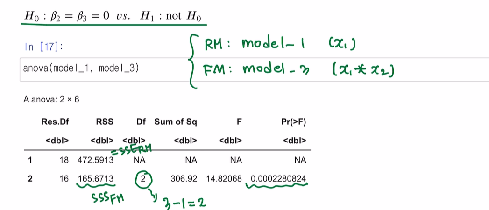
가변수가 아닌, one-hot encoding
dt2 <- data.frame(y = dt$y,
x1 = dt$x1,
x2 = as.numeric(dt$x2=='M'),
x3 = as.numeric(dt$x2=='F'))
dt2| y | x1 | x2 | x3 |
|---|---|---|---|
| <dbl> | <dbl> | <dbl> | <dbl> |
| 17 | 151 | 1 | 0 |
| 26 | 92 | 1 | 0 |
| 21 | 175 | 1 | 0 |
| 30 | 31 | 1 | 0 |
| 22 | 104 | 1 | 0 |
| 1 | 277 | 1 | 0 |
| 12 | 210 | 1 | 0 |
| 19 | 120 | 1 | 0 |
| 4 | 290 | 1 | 0 |
| 16 | 238 | 1 | 0 |
| 28 | 164 | 0 | 1 |
| 15 | 272 | 0 | 1 |
| 11 | 295 | 0 | 1 |
| 38 | 68 | 0 | 1 |
| 31 | 85 | 0 | 1 |
| 21 | 224 | 0 | 1 |
| 20 | 166 | 0 | 1 |
| 13 | 305 | 0 | 1 |
| 30 | 124 | 0 | 1 |
| 14 | 246 | 0 | 1 |
Model4: \(y=\beta_0 + \beta_1x_1 + \beta_2x_2 + \beta_3x_3 + \epsilon\) (잘못된 예시)
\(\beta_0\)와 \(\beta_2x_2 + \beta_2x_2\) 가 linearly independent하지 않아서 rank가 줄어들기 때문에 LSE를 구할 수 없게 된다. \((1 = x_2 + x_3)\)
아래의 표에서 확인할 수 있듯이 \(x3\)에 대한 LSE 값이 구해지지 않았다. (Full rank가 아니기 때문에 구해지지 않는다.)
Call:
lm(formula = y ~ ., data = dt2)
Residuals:
Min 1Q Median 3Q Max
-5.0165 -1.7450 -0.6055 1.8803 6.1835
Coefficients: (1 not defined because of singularities)
Estimate Std. Error t value Pr(>|t|)
(Intercept) 41.768865 1.948930 21.432 9.64e-14 ***
x1 -0.100918 0.008621 -11.707 1.47e-09 ***
x2 -7.933953 1.414702 -5.608 3.13e-05 ***
x3 NA NA NA NA
---
Signif. codes: 0 ‘***’ 0.001 ‘**’ 0.01 ‘*’ 0.05 ‘.’ 0.1 ‘ ’ 1
Residual standard error: 3.123 on 17 degrees of freedom
Multiple R-squared: 0.8991, Adjusted R-squared: 0.8872
F-statistic: 75.72 on 2 and 17 DF, p-value: 3.42e-09Model5: 그래도 원-핫인코딩 하고 싶다면?
- 절편, \(x_2, x_3\) 중 하나를 날리면 된다.
Model5: $ y= _1x_1 + _2x_2 + _3x_3 + $
\(\begin{cases} x_2=\begin{cases}1 & M\\ 0 & F \end{cases} \\ x_3=\begin{cases} 0 & M\\ 1 & F\end{cases}\end{cases}\)
\(E(y|M) = \beta_1x_1 + \beta_2\)
\(E(y|F) = \beta_1x_1 + \beta_3\)
기울기는 동일한데 절편이 \(\beta_2, \beta_3\) 이렇게 차이가 나는 것이다.
앞에서 썼던 절편이 있는 모형으로 친다면 \(E(y|M) = (\beta_0 + \beta_2) + \beta_1x_1\) 이고, \(\beta_2 = \beta_0+\beta_2\) 라고 생각하면 된다.
Call:
lm(formula = y ~ 0 + x1 + x2 + x3, data = dt2)
Residuals:
Min 1Q Median 3Q Max
-5.0165 -1.7450 -0.6055 1.8803 6.1835
Coefficients:
Estimate Std. Error t value Pr(>|t|)
x1 -0.100918 0.008621 -11.71 1.47e-09 ***
x2 33.834912 1.758659 19.24 5.64e-13 ***
x3 41.768865 1.948930 21.43 9.64e-14 ***
---
Signif. codes: 0 ‘***’ 0.001 ‘**’ 0.01 ‘*’ 0.05 ‘.’ 0.1 ‘ ’ 1
Residual standard error: 3.123 on 17 degrees of freedom
Multiple R-squared: 0.982, Adjusted R-squared: 0.9788
F-statistic: 309 on 3 and 17 DF, p-value: 5.047e-15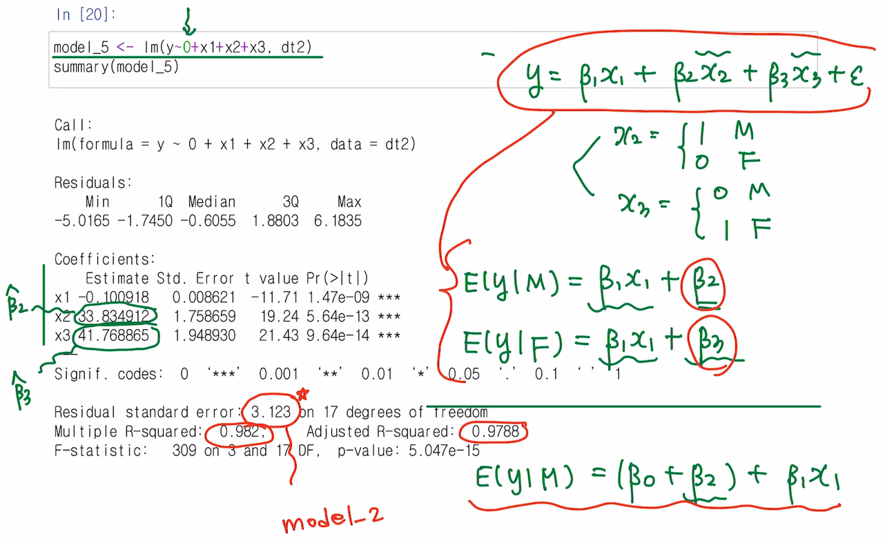
- 가변수를 사용하거나 절편을 없는 모델을 사용하는 방법이 있는데 절편이 없는 모형보다 가변수 사용을 추천(해석 측면에서 좋음)
Carseats
| Sales | CompPrice | Income | Advertising | Population | Price | ShelveLoc | Age | Education | Urban | US | |
|---|---|---|---|---|---|---|---|---|---|---|---|
| <dbl> | <dbl> | <dbl> | <dbl> | <dbl> | <dbl> | <fct> | <dbl> | <dbl> | <fct> | <fct> | |
| 1 | 9.50 | 138 | 73 | 11 | 276 | 120 | Bad | 42 | 17 | Yes | Yes |
| 2 | 11.22 | 111 | 48 | 16 | 260 | 83 | Good | 65 | 10 | Yes | Yes |
| 3 | 10.06 | 113 | 35 | 10 | 269 | 80 | Medium | 59 | 12 | Yes | Yes |
| 4 | 7.40 | 117 | 100 | 4 | 466 | 97 | Medium | 55 | 14 | Yes | Yes |
| 5 | 4.15 | 141 | 64 | 3 | 340 | 128 | Bad | 38 | 13 | Yes | No |
| 6 | 10.81 | 124 | 113 | 13 | 501 | 72 | Bad | 78 | 16 | No | Yes |
- 400
- 11
• Sales : 판매량 (단위: 1,000)
• Price : 각 지점에서의 카시트 가격
• ShelveLoc : 진열대의 등급 (Bad, Medium, Good)
• Urban :도시 여부 (Yes, No)
• US : 미국 여부 (Yes, No)
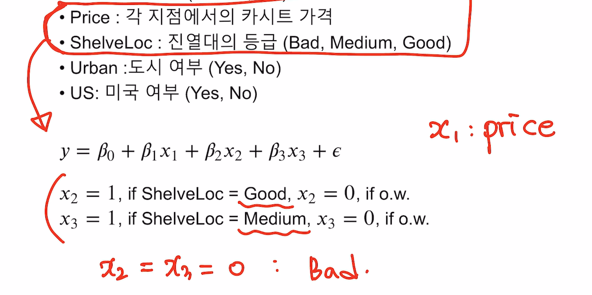
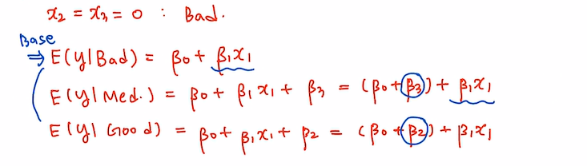
가격이 동일하다면 평균적인 판매량이 나쁜위치에 있는 카시트보다 좋은 위치에 있는 카시트가 \(\beta_2\) 만큼 더 차이가 날 것이다.
가격이 동일하다면 평균적인 판매량이 나쁜위치에 있는 카시트보다 중간 위치에 있는 카시트가 \(\beta_3\)만큼 더 차이가 날 것이다.
Call:
lm(formula = fit <- lm(Sales ~ Price + ShelveLoc, data = Carseats))
Residuals:
Min 1Q Median 3Q Max
-5.8229 -1.3930 -0.0179 1.3868 5.0780
Coefficients:
Estimate Std. Error t value Pr(>|t|)
(Intercept) 12.001802 0.503447 23.839 < 2e-16 ***
Price -0.056698 0.004059 -13.967 < 2e-16 ***
ShelveLocGood 4.895848 0.285921 17.123 < 2e-16 ***
ShelveLocMedium 1.862022 0.234748 7.932 2.23e-14 ***
---
Signif. codes: 0 ‘***’ 0.001 ‘**’ 0.01 ‘*’ 0.05 ‘.’ 0.1 ‘ ’ 1
Residual standard error: 1.917 on 396 degrees of freedom
Multiple R-squared: 0.5426, Adjusted R-squared: 0.5391
F-statistic: 156.6 on 3 and 396 DF, p-value: < 2.2e-16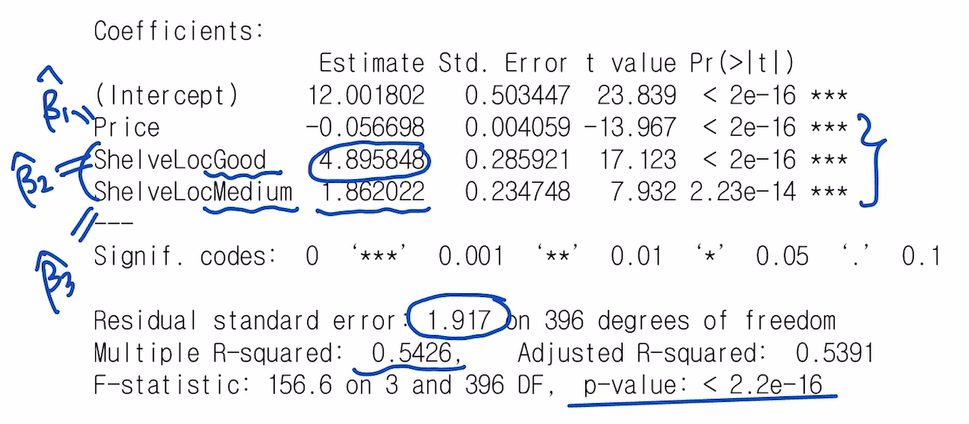
- 가격이 1만큼 높아지면 평균 판매량이 \(0.056698\) 만큼 감소한다. (음의관계)
| Good | Medium | |
|---|---|---|
| Bad | 0 | 0 |
| Good | 1 | 0 |
| Medium | 0 | 1 |
ggplot(Carseats, aes(Price, Sales, col=ShelveLoc)) +
geom_point() +
theme_bw() +
geom_abline(slope = coef(fit)[2],
intercept = coef(fit)[1], col= 'darkorange')+
geom_abline(slope = coef(fit)[2],
intercept = coef(fit)[1]+coef(fit)[3], col= 'steelblue')+
geom_abline(slope = coef(fit)[2],
intercept = coef(fit)[1]+coef(fit)[4], col= 'darkgreen')+
guides(col=guide_legend(title="ShelveLoc")) +
scale_color_manual(labels = c("Bad", "Good", "Medium"),
values = c("darkorange", "steelblue","darkgreen"))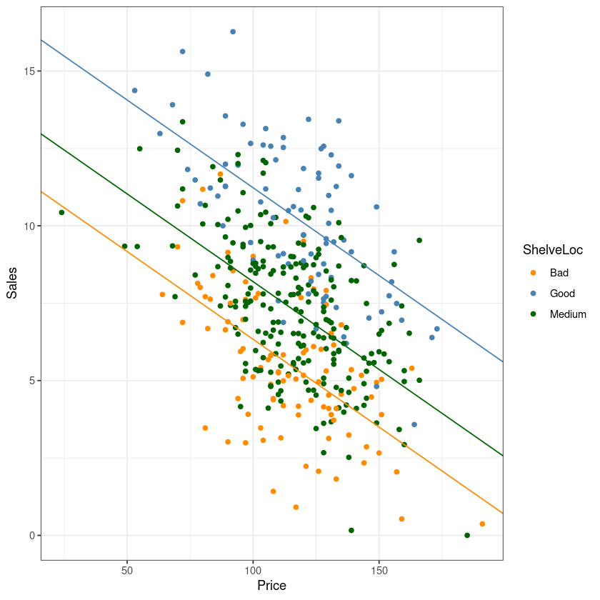
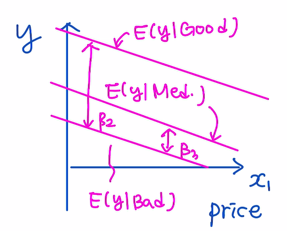
Call:
lm(formula = Sales ~ Price + ShelveLoc + US, data = Carseats)
Residuals:
Min 1Q Median 3Q Max
-5.1720 -1.2587 -0.0056 1.2815 4.7462
Coefficients:
Estimate Std. Error t value Pr(>|t|)
(Intercept) 11.476347 0.498083 23.041 < 2e-16 ***
Price -0.057825 0.003938 -14.683 < 2e-16 ***
ShelveLocGood 4.827167 0.277294 17.408 < 2e-16 ***
ShelveLocMedium 1.893360 0.227486 8.323 1.42e-15 ***
USYes 1.013071 0.195034 5.194 3.30e-07 ***
---
Signif. codes: 0 ‘***’ 0.001 ‘**’ 0.01 ‘*’ 0.05 ‘.’ 0.1 ‘ ’ 1
Residual standard error: 1.857 on 395 degrees of freedom
Multiple R-squared: 0.5718, Adjusted R-squared: 0.5675
F-statistic: 131.9 on 4 and 395 DF, p-value: < 2.2e-16구간별 회귀분석
### threshould = 500
## x2(x1-xw)=x2(x1-500) = (x1 - 500)+ := x2
dt$x2 = sapply(dt$x1, function(x) max(0, x-500))
m <- lm(y ~ x1+x2, dt)
summary(m)
Call:
lm(formula = y ~ x1 + x2, data = dt)
Residuals:
1 2 3 4 5 6 7 8
-22.765 29.765 18.068 4.068 -17.463 20.605 -15.117 -17.160
Coefficients:
Estimate Std. Error t value Pr(>|t|)
(Intercept) 589.5447 60.4213 9.757 0.000192 ***
x1 -0.3954 0.1492 -2.650 0.045432 *
x2 -0.3893 0.2310 -1.685 0.152774
---
Signif. codes: 0 ‘***’ 0.001 ‘**’ 0.01 ‘*’ 0.05 ‘.’ 0.1 ‘ ’ 1
Residual standard error: 24.49 on 5 degrees of freedom
Multiple R-squared: 0.9693, Adjusted R-squared: 0.9571
F-statistic: 79.06 on 2 and 5 DF, p-value: 0.0001645